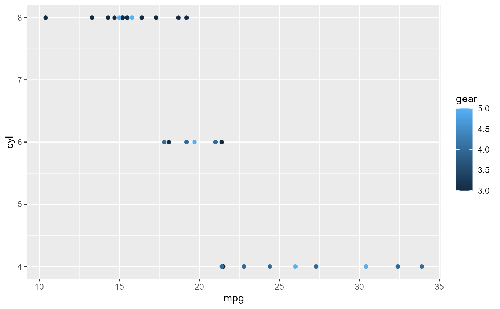
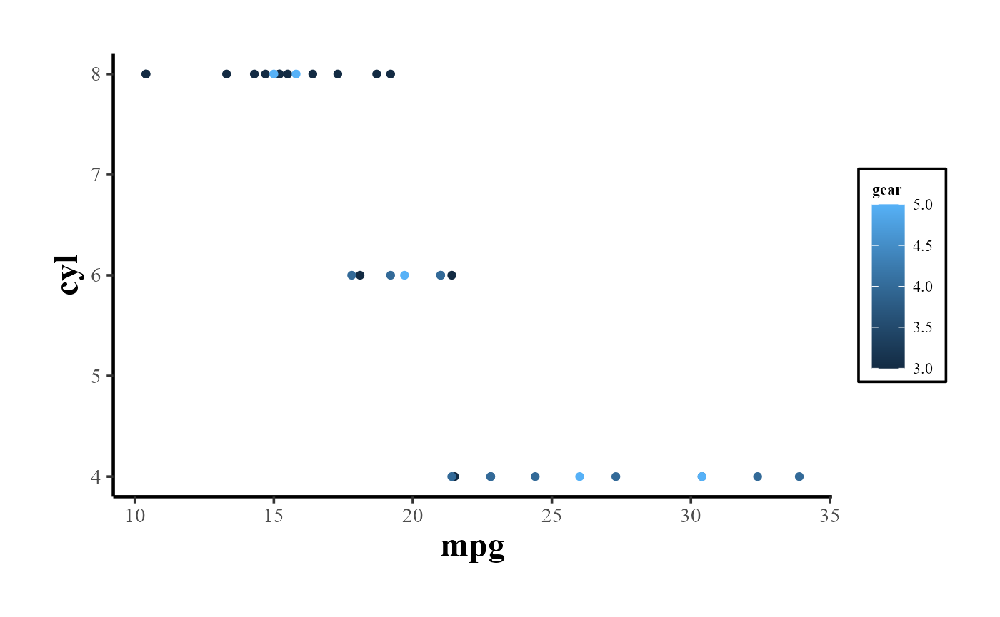
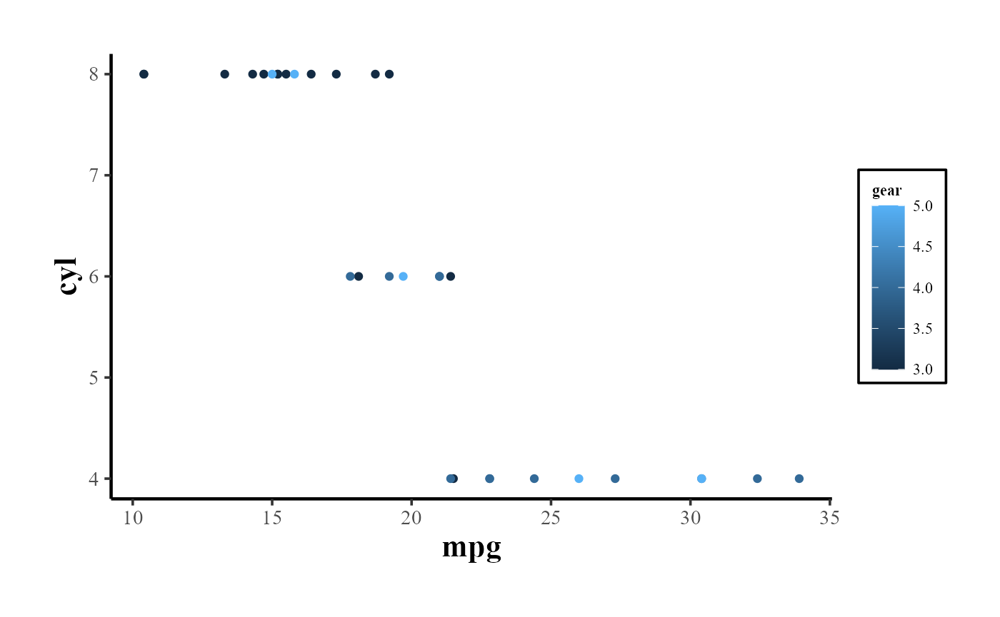

Introduction to CausalVerse
Mike Nguyen
2023-08-23
introduction.Rmd
library(causalverse)
Introduction to the causalverse
Package
Welcome to the causalverse package - a
dedicated toolkit tailored for researchers embarking on causal inference
analyses. Our primary mission is to simplify and enhance the research
process by offering robust tools specifically designed for various
causal inference methodologies.
Vignettes Overview
To enable a comprehensive understanding of each causal inference
method, causalverse boasts a series of
in-depth vignettes. Each vignette offers a blend of theoretical
background and hands-on demonstrations, ensuring you have both the
knowledge and skills to implement each method effectively.
Here’s a snapshot of our method-specific vignettes:
Regression Discontinuity: The Regression Discontinuity vignette delves into the nuances of the Regression Discontinuity approach. From its foundational principles to its practical implementation in
causalverse, this guide offers a thorough exploration.Difference in Differences: Navigate to the Difference-in-Differences vignette for a deep dive into the Difference in Differences methodology. Grasp the core concepts, witness its application, and explore use-cases.
Synthetic Controls (SC): The
scvignette demystifies the Synthetic Control method, providing insights into its algorithm, advantages, limitations, and usage within our package.Instrumental Variables (IV): Turn to the
ivvignette for a comprehensive look at the Instrumental Variables approach, where you’ll learn about its theoretical underpinnings and practical application incausalverse.Event Studies (EV): The
evvignette offers a deep dive into Event Studies, ensuring you’re equipped to harness its full potential for causal analysis.Randomized Control Trials (RCT): Although
causalverseprimarily focuses on quasi-experimental methods using observational data, we recognize the importance of experimental methods in causal research. Therctvignette presents a detailed overview of Randomized Control Trials, the gold standard of experimental research.
A Note on Methodologies
The majority of methods covered in
causalverse pertain to quasi-experimental
approaches, typically applied to observational data. These methods are
instrumental in scenarios where running randomized experiments might be
infeasible, unethical, or costly. However, we also touch upon
experimental methods, specifically RCTs, recognizing their unparalleled
significance in establishing causal relationships.
Getting Started
As you embark on your journey with
causalverse, we recommend starting with
this introductory vignette to familiarize yourself with the package’s
architecture and offerings. Then, delve into the method-specific
vignettes that align with your research objectives or peruse them all
for a holistic understanding.
I hope this provides a clearer and professional introduction for your vignette. If you have any additional inputs or refinements, please let me know!
Reporting
In this section, the focus is primarily on reporting rather than causal inference. Given that my primary domain of interest is marketing, I adhere to the American Marketing Association’s style guidelines for presentation. As a result, my plots typically align with the AMA theme. However, users always retain the flexibility to modify the theme as needed.
The amatheme function is designed to
provide a custom theme for ggplot2 plots that align with the styling
guidelines of the American Marketing Association.
library(ggplot2)
data(mtcars)
p <- ggplot(mtcars, aes(x = mpg, y = cyl)) +
geom_point(aes(color = gear))
p
# simply add the amatheme function to apply the custom theme
p + amatheme()
Customizing the Theme
p + amatheme(title_size = 20, axis_title_size = 18)
Moreover, the function can inherit all parameters from the
theme function, allowing even further
customization:
